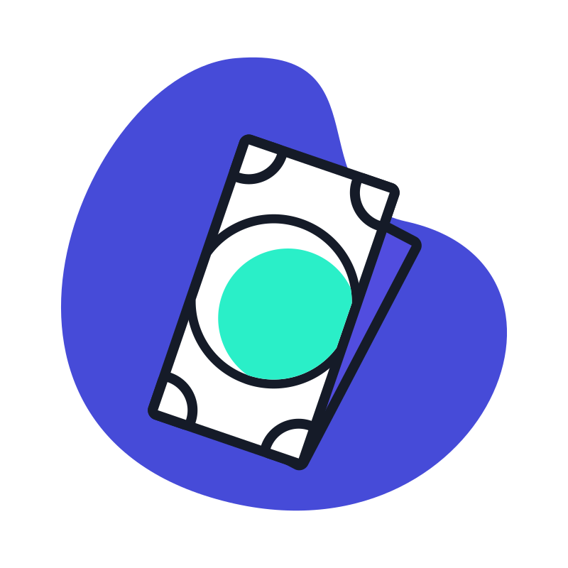

Jogo Indie
História dos jogos
- A primeira fase dos videogames, em meados de 1950, não foi bem uma fase em si, porque os jogos não tinham o intuito de fazer franquias milionárias, mas só para testar a capacidade tecnológica da máquina e os displays de vídeos.
- Em 1972, a empresa Magnavox revolucionou essa indústria, fazendo o Odyssey, o primeiro console doméstico da história. Anos depois, 1977 a Nintendo entrou nesse mercado com o Color TV-Game e o Atari 2600,
- Em 1995 a Sony entrou no mercado lançando o Playstation 1, a Sony mudou a indústria dos consoles e rapidamente se tornou uma gigante do ramo. O Playstation trouxe pela primeira vez CD em consoles, diminuindo o custo de produção e aumentando a distribuição.

O que é Jogo Indie?

Equipe pequena
A produtora possui uma equipe pequena com em média 5 integrantes

Pouco orçamento
Essas produtoras pouco ou até nenhum orçamento para fazer determinado jogo.
Inovação
Desenvolver jogos inovadores ou fora de caixa para impressionar
Hollow Knight
- Lançado em 2017, "Hollow Knight" transporta os jogadores para um mundo misterioso e sombrio, repleto de personagens cativantes e desafios intrigantes.
- Sua jogabilidade envolvente e aprofundada, aliada a uma narrativa envolvente, cativou milhões de jogadores em todo o mundo.
Gris
- Lançado em 2018, "Gris" é uma experiência visualmente deslumbrante que segue a jornada emocional de uma jovem em um mundo de tristeza e esperança.
- Seus gráficos artísticos e a trilha sonora emocional proporcionam uma experiência única, demonstrando a capacidade dos jogos independentes de transcender os limites convencionais.